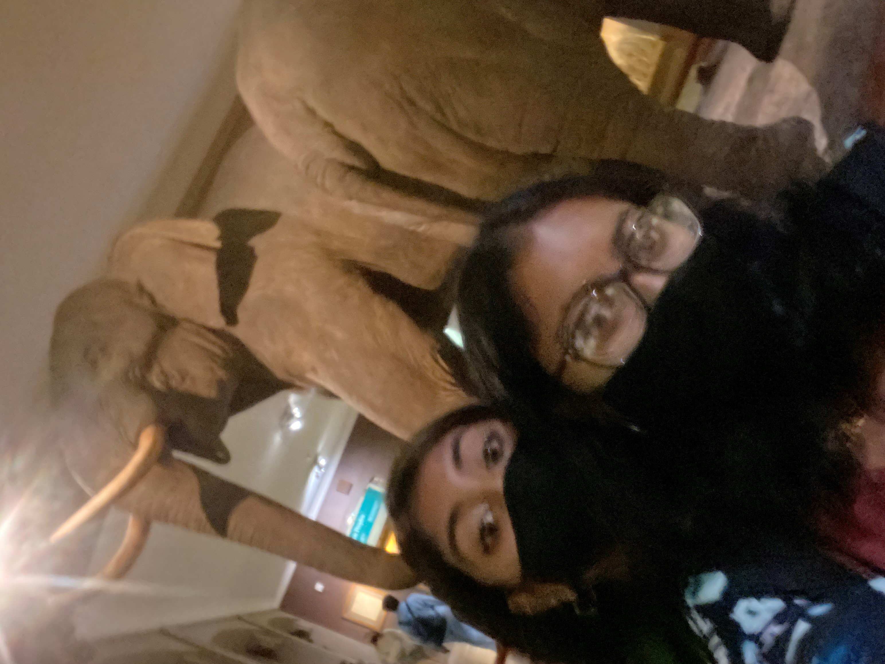

August 27th
Today was my first day of having to go to work and then go to school. I went to work from 8-12. There was no one else in the office and I didn't get that much work. I finished up all the work that I got and then spent the remaining time studying for my classes. I had a really good and productive study session so I think that's what I'm going to do from now on when I don't have anything to do in work. After work I had to get to school for 12:45 for my class. On schedule builder, it says that class is in person but the professor is doing it all online. I still went to campus today, though, because I wanted to go to the club fair that Hunter was having afterwards. So I got to Hunter at around 12:30, found a seat and had my class.

The professor requires cameras to be on so that is unfortunate. Once class ended, I met up with my friend Anthony again and we went to the street/club fair. To be honest, it was a dub. And our only explanation for that is "Hunter". It was very crowded and a lot of the clubs are ethnic related. We walked through the fair and then decided to get food. It was an impromtu decision, as always with us. We found an Italian restaurant called Donna Margherita so we decided to go there. It was a pretty nice restaurant, authentic Italian. We got our food, ate, talked about some CRAZY stories and people, and then left. Anthony hopped in an uber and I took the train back home. Once again, it was so much fun hanging out with Anthony and it made up for the wack fair.
August 28th
Today Mahrukh and I finally went out after almost a year!! We planned to go to Court Street Tavern because the restaurant is sooo cute and I wanted to take photos. We met up at the junction for 12 and then took the B103 from there. We had a reservation for 2:00 but we got to the restaurant at around 1:30. They still took us though! Also, the reservation was for indoor seats because we thought it was going to rain but we really wanted to sit outdoors because that's where all the aesthetics are. They let us sit outdoors also! We ordered our food and talked about so much stuff. From school and work to drama and gossip. We haven't caught up in so long!!
We took photos and then left the restaurant to get dessert. We saw a snow cone cart while we were walking there and Mahrukh wanted one so that's what we got. We walked and talked some more and went to a playground because Mahrukh wanted to go on the swings. We waited until the kids left and swung. I haven't been on a swing in so long, it literally felt like I was flying. We walked around and saw some other really cute restaurants that we want to go to. We took the R and 2 train back to the junction and then we were on our way home. It was so great to finally see Mahrukh again, I was not going to make an entire year pass by without me seeing her.
September 8th
Today is my birthday!! I spent the day similar to how I spent it last year. First, I had work from 8am-12pm but it was remote so I was able to stay home to clock in and out. All my coworkers came together and created an online happy birthday postcard and sent it to me. It was very cute and thoughtful. After work, I had an appointment at Sunset Park Tattoo Studio for 1. I got a tattoo of a cross on the side of my right wrist. I took the b6 and then at the transfer point to the b11, Sharmin met me. We took the b11 together to the studio and got the tattoo done right away. Since it was so close to the wrist, it hurt a bit. I would give it a 7/10 pain level. Afterwards, we took the b11 back to Sharmin's house. Her mom made gyros which is what we also ate last year and one of my favorite foods. Sharmin and I ate the gyros for lunch while watching You on Netflix. Then Sharmin gave me my gifts. I got a kolbalish which is a pillow to hug while I sleep. I've always wanted one because it's so comfortable and I finally got it!! Also, I got a ring from pandora and Sharmin has one too so we're matching! Then we played the same game that we played before where we were supposed to name all the countries of the world in 15 minutes. We did much better than last time so that's good. Next, we played pictionary and a bunch of games on Kahoot based on topics that we both like. We've never done that before but it was super fun because it was always one of us that knew all the answers and one that didn't know any. After that, we just chilled until my dad came to pick me up. It was a fun day and I had a great birthday!
September 13th
This day started off very regular shmegular. I had been planning to meet up with Maylyn, one of my friends from high school but our schedules barely lined up and there were a lot of days off from school. We planned to meet up yesterday, which was Monday but that was canceled. Today I had work in the morning and then from 12:45pm to 2pm I have class. The class is online and the Hunter Brookdale campus is right across the street from my job so I take the class in the library there. I thought it wouldn't be possible to meet up with my friend today because I wasn't at the main campus but that wasn't the case! Turns out she's dorming at the Brookdale dorms so she was right there. We met up after my class finished at 2. We had no plan because we didn't even know we were going out. We walked around for a bit and decided to go to Franks Trattoria an Italian shop. We both got pizza and just caught up with each others lives. It was nice seeing her and since she's so close to my job, I'll definitely be seeing her a lot more!!
September 24th
Today was a really long day. I went to work as usual. I spent about an extra hour at work (30 minutes earlier and 30 minutes later) because why not. I've been working a lot of overtime.🤑 My geology professor was planning to have a field trip to the gem and mineral exhibition at the museum of natural history as a class for a lab. She was planning for it to be today so she was gathering the availability of everyone to see if we would have enough people. Enough people were available so they agreed to meet at the museum at 3 and class was canceled. I was available during that time but I had work to do, specifically a Spanish asynchronous exam to take. If class wasn't canceled then I don't know when I would've taken the exam so thank goodness for that. I went to the library at the Hunter Brookdale campus and took my exam. Pretty chill exam to be honest. Then I had planned to go to the Feast of San Gennaro with a new friend that I made at Hunter, named Karen. The Feast of San Gennaro is an iconic festival in Little Italy/Chinatown. We met there at around 3.
The first thing that we got was food because we were both really hungry. There was a lot of street food and vendors which are our favorite. We both got these big jumbo shish kebabs and it was amazing, just really salty. The fair had a couple of rollercoaster and games. We decided to go on the ferris wheel. The dude controlling it literally seemed like he didn't care at all so we went around a bunch of time. I was kind of sketchy to go on a ferris wheel in the middle of Chinatown but it was honestly pretty fun and there was a really good view of the festival when we were on top. We walked around the fair, got gelato and then went to a nearby park. We found a seat and just talked and caught up on each others lives. After that, we walked through the fair one more time and then were on out way home. We both took the F train and then transferred at our respectful stops. It was really fun hanging out with Karen, especially since I wanted to go to the Feast of San Gennaro for a long time now!!
October 10th
Today Sharmin and I decided to go to the American Museum of Natural History so that I could complete my lab for my geology class. I went to church and to my therapist in the morning and then I was on my way to the museum. Sharmin met me at Atlantic Avenue on the 2 train. The plan was to take the 2 train to 72nd street and then walk to the museum on 81st street. But since it was raining, we decided to transfer to the C train at Times Square and get off at 81st which led straight into the museum. However, once we got there, to our surprise, they weren't letting anyone in through that entrance because of covid. When we went outside, the line to the museum went around a block and a half and we had to wait on it even though we had a reservation at 2pm. The line moved quickly, though and once we were in museum, we went to the gems and minerals exhibition first so I could do my lab. I took pictures of a lot of the rocks and gems, and a lot of
the explanations that went with it so I would have something to write about. Afterwards, we walked around the entire museum, there was a bunch of cool stuff. Once we saw all the exhibits, we left the museum and Sharmin wanted to go to a nearby flea market. The flea market had a lot of clothes, art and jewelry. It was pretty nice but overpriced for a flea market in my opinion. Next, we went to Shake Shack, got some food and just talked. Then we walked to the train station and were on our way home. It's been a while since Sharmin and I went out so it was a good and productive day!
October 17th
Today was Sharmin's birthday! Happy birthday Sharmin!! The plan was to go bowling and get lunch afterwards. Her birthday fell on a Sunday so I went to church and to my therapist before going out. Sharmin and I met at the Atlantic Avenue train station and took the N train together from there. Once we arrived, we waited a bit for Summayya to come and then we were on our way to Melody Lanes. We paid for an hour of bowling. I was on the bowling team in highschool so i was pretty confident that I was going to win. I was winning at fist but as Sharmin and Summayya started getting the hang of it, they were catching up to me!! Very crazy. Sharmin won the first game and Summayya won the second. We started a third one but wasn't able to finish because our time ran out. Then we went to Prince Tea House for lunch. The place was really cute and the food was pretty good. Also, were really reasonably priced. We ended up getting lunch and dessert because the place is actually known for their dessert. Afterwards, we went back to the train station to be on our way home. It was still pretty early so once we got to Atlantic Avenue, Sharmin and Summayya got out and wanted to walk around Atlantic Terminal Mall while I just transferred to my next train to get home. Bowling made me feel nostalgic but it was a calm and fun day!!
Canada
These 5 days I decided to take a trip to Toronto, Canada to take a mental break and visit some of my friends and family. My aunt lives in Canada and I am SUPER close with her so I'll be staying with her.
November 24th
Well today was my flight!! The flight was leaving at 10:35am and for international flights they recommend you be there at least 3 hours before so everything goes smoothly. So I was aiming for 7:30am. I woke up at 5:30 and left home at 6:30. My dad was driving me to Laguardia Airport. Once we got there, we parked up and then went to one of the Air Canada kiosks so I could check in and get my boarding pass. But for some reason, the kiosk kept telling me that my boarding pass couldn't be printed so I had to go wait on line to see an actual person. The line was short, though so it was all good. Then once I went up to the representative, I gave her all my stuff and then she asked for my aeroCan and I was like "huh?". I didn't have that so I had to step aside, download the app and then fill out all my information in order to get a QR code. Then once all that was over, I was able to check in and then I went to the TSA for then to scan and check my bags. One of my bags got pulled aside for extra checking. The agent opened it and checked it and then let me go. Then I was on my way to the gate. I had my suitcase as a carry on and my duffel bag as a personal item and oof that was a lot to carry (I made it tho!). I found gate 49, found a seat and just chilled. It was 9am so I had an hour until boarding at 10. Pretty good timing. We started boarding late but still landed ontime at 12:12. My aunt couldn't pick me up at the airport so she sent one of her friends, Kathleen, to come pick me up. Once I landed, I texted Kathleen. Before I exited the airport I had to go to border security where they checked my aeroCan and stamped my passport. Then I exited the airport and found Kathleen. It was surprisingly a flawless and smooth process in terms of timing and finding her. Then we went to Tim Hortons, got some food, and she dropped me off at my aunt's house. My aunt wasn't coming home until around 4 so I just ate and chilled out. Then once she came home, we went to the supermarket to get some snacks and food for me. We also went to the pharmacy to inquire about a covid test for when I have to come back home. After that, we came home, showered, ate dinner and then chilled for the rest of the day.
November 25th
I slept SO well last night. It was like my body knew I was on vacation and that I was waking up to not a care in the world. I woke up at around 8 and got out of bed at like 9. I came downstairs, ate some breakfast and then my aunt and I just chilled. We had some really deep conversations about both of our lives. Then we both had lunch. At around 4:30, we left to go pick up Kathleen and then we were on our way to downtown Toronto. We drove to scarborough center where we parked the car and went to take the train. Their train system is similar to New York but the map is much less simpler because they only have 4 trains. We took 3 trains to get to downtown Toronto. When we got off the train, our first stop was Nathan Phillip Square because that is where the big Toronto sign is. It was dark outside so the sign was lit up and it looked really pretty. We stopped to take pictures of it and with it. Near there is a mall named Eaton Center where we just walked through to see the Christmas decorations. Then we continued walking to a place called Dundas Square which is like New York's Times Square. It was nice and definitely did give off that Times Square vibe. Then my aunt wanted to show Kathleen and I her college and its campus. It was literally one block away which is crazy because its like her college was smack in the middle of Times Square. The campus was pretty big and I actually liked it there. Then while we were walking, we saw this little section with a bunch of food carts and street fair. We stopped there and Kathleen got Brazilian food, my aunt got falafel and I got poutine. I tried poutine the last time I went to Canada and I loved it so I had to get it again. We sat and ate and then we went back to the train station to go to the CN Tower. The CN tower is like Canada's monument. Once we got out of the train station, it had gotten SO cold and windy. We went to the CN tower and walked through the skywalk/bridge and then that linked us to the train station again. Before the station was a kind of mini museum so we walked through there and then hopped on the train. We got back to the car, dropped Kathleen home and then went home. The day may have started late but it was definitely packed and fun.